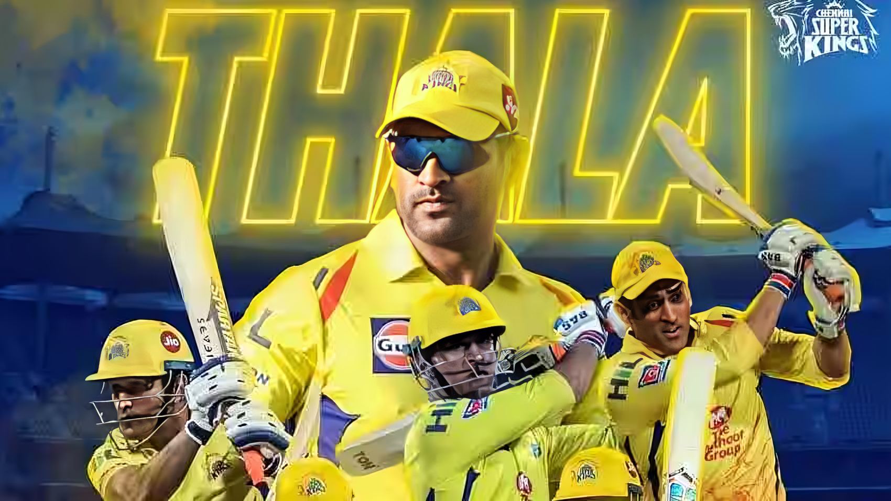
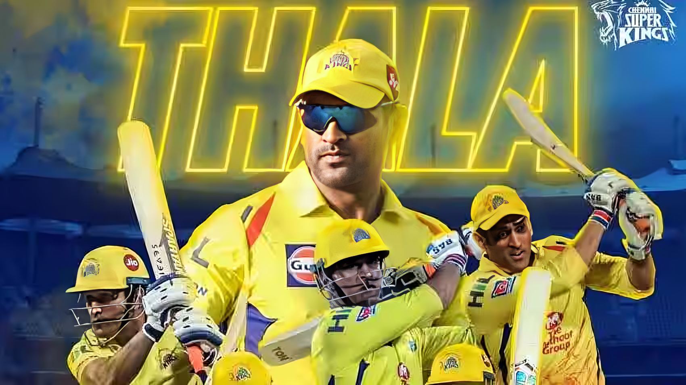

Dhoni was born in Ranchi, Bihar (now in Jharkhand), and he identifies as being a Rajput. His paternal village Lvali is in the Lamgarha block of the Almora District of Uttarakhand. Dhoni's parents, moved from Uttarakhand to Ranchi where Pan Singh worked in junior management positions in MECON. Dhoni has a sister Jayanti Gupta and a brother Narendra Singh Dhoni. Dhoni is a fan of Adam Gilchrist, and his childhood idols were cricket teammate Sachin Tendulkar, Bollywood actor Amitabh Bachchan and singer Lata Mangeshkar.
 
